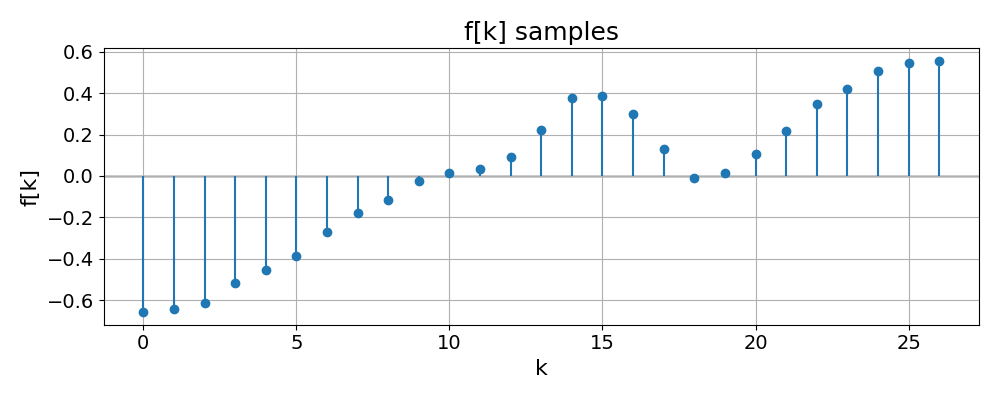
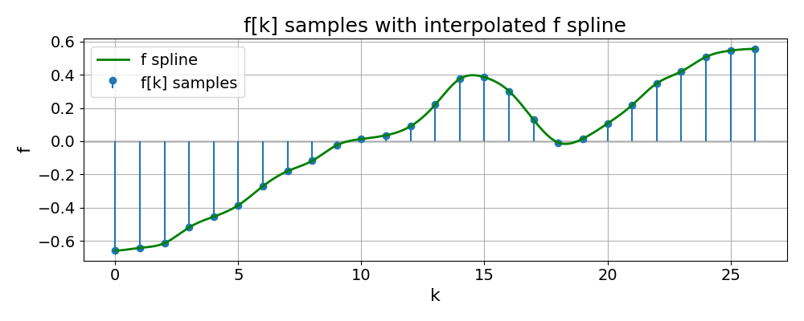

Interpolate 1D samples#
Interpolate 1D samples with standard interpolation.
Assume that a user-provided 1D list of samples \(f[k]\) has been obtained by sampling a spline on a unit grid.
From the samples, recover the continuously defined spline \(f(x)\).
Imports#
import numpy as np
import matplotlib.pyplot as plt
from splineops.spline_interpolation.tensorspline import TensorSpline
plt.rcParams.update({
"font.size": 14, # Base font size
"axes.titlesize": 18, # Title font size
"axes.labelsize": 16, # Label font size
"xtick.labelsize": 14,
"ytick.labelsize": 14
})
Initial 1D Samples#
We generate 1D samples and treat them as discrete signal points.
Let \(\mathbf{f} = (f[0], f[1], f[2], \dots, f[K-1])\) be a 1D array of data.
These are the input samples that we are going to interpolate.
number_of_samples = 27
f_support = np.arange(number_of_samples, dtype=np.float64)
f_support_length = len(f_support) # It's equal to number_of_samples
f_samples = np.array([
-0.657391, -0.641319, -0.613081, -0.518523, -0.453829, -0.385138,
-0.270688, -0.179849, -0.11805, -0.0243016, 0.0130667, 0.0355389,
0.0901577, 0.219599, 0.374669, 0.384896, 0.301386, 0.128646,
-0.00811776, 0.0153119, 0.106126, 0.21688, 0.347629, 0.419532,
0.50695, 0.544767, 0.555373
], dtype=np.float64)
plt.figure(figsize=(10, 4))
plt.title("f[k] samples")
plt.stem(f_support, f_samples, basefmt=" ")
# Add a black horizontal line at y=0:
plt.axhline(
y=0,
color="black",
linewidth=1,
zorder=0
)
plt.xlabel("k")
plt.ylabel("f[k]")
plt.grid(True)
plt.tight_layout()
plt.show()

Interpolate the Samples with a Spline#
We interpolate the 1D samples with a spline to obtain the continuously defined function
where
the B-spline of degree \(n\) is \(\beta^n\);
the spline coefficients \(c[k]\) are determined from the input samples, such that \(f(k) = f[k]\).
Let us now plot \(f\).
# Plot points
plot_points_per_unit = 12
# Interpolated signal
base = "bspline3"
mode = "mirror"
TensorSpline#
Here is one way to perform the standard interpolation.
f = TensorSpline(data=f_samples, coordinates=f_support, bases=base, modes=mode)
f_coords = np.array([q / plot_points_per_unit
for q in range(plot_points_per_unit * f_support_length)])
# Syntax hint: pass (plot_coords,) not plot_coords
f_data = f(coordinates=(f_coords,), grid=False)
Resize Method#
The resize method with standard interpolation yields the same result.
from splineops.resize import resize
# We'll produce the same number of output samples as in f_coords
desired_length = plot_points_per_unit * f_support_length
# IMPORTANT: We explicitly define a coordinate array from 0..(f_support_length - 1)
# with `desired_length` points. This matches the domain and size that the `resize`
# function will produce below, ensuring the two outputs are sampled at the exact
# same x-positions, and thus comparable point-by-point.
f_coords_resize = np.linspace(0, f_support_length - 1, desired_length, dtype=np.float64)
f_data_resize = resize(
data=f_samples, # 1D input
output_size=(desired_length,),
method="cubic" # ensures TensorSpline standard interpolation, not least-squares or oblique
)
# Ensure both arrays have identical shapes
f_data_spline = f(coordinates=(f_coords_resize,), grid=False)
assert f_data_spline.shape == f_data_resize.shape, "Arrays must match in shape."
mse_diff = np.mean((f_data_spline - f_data_resize)**2)
print(f"MSE between TensorSpline result and resize result = {mse_diff:.6e}")
MSE between TensorSpline result and resize result = 4.460561e-15
Plot of the Spline f#
plt.figure(figsize=(10, 4))
plt.title("f[k] samples with interpolated f spline")
plt.stem(f_support, f_samples, basefmt=" ", label="f[k] samples")
# Add a black horizontal line at y=0:
plt.axhline(
y=0,
color="black",
linewidth=1,
zorder=0 # draw behind other plot elements
)
plt.plot(f_coords_resize, f_data_resize, color="green", linewidth=2, label="f spline")
plt.xlabel("k")
plt.ylabel("f")
plt.legend()
plt.grid(True)
plt.tight_layout()
plt.show()

Total running time of the script: (0 minutes 0.234 seconds)